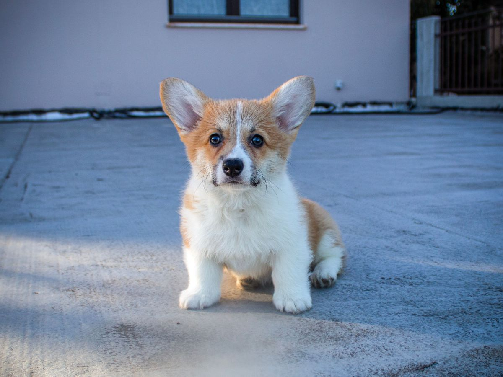
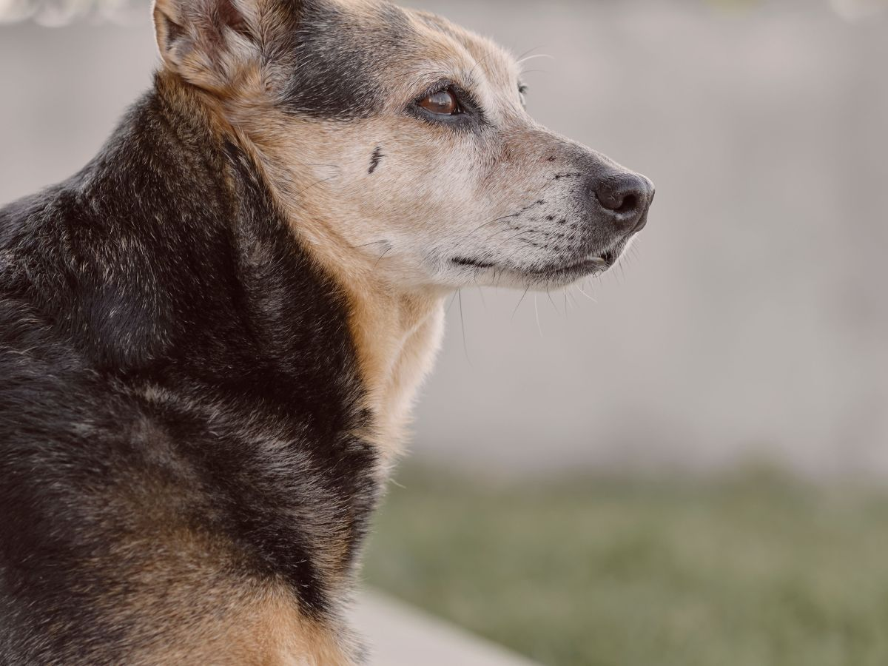
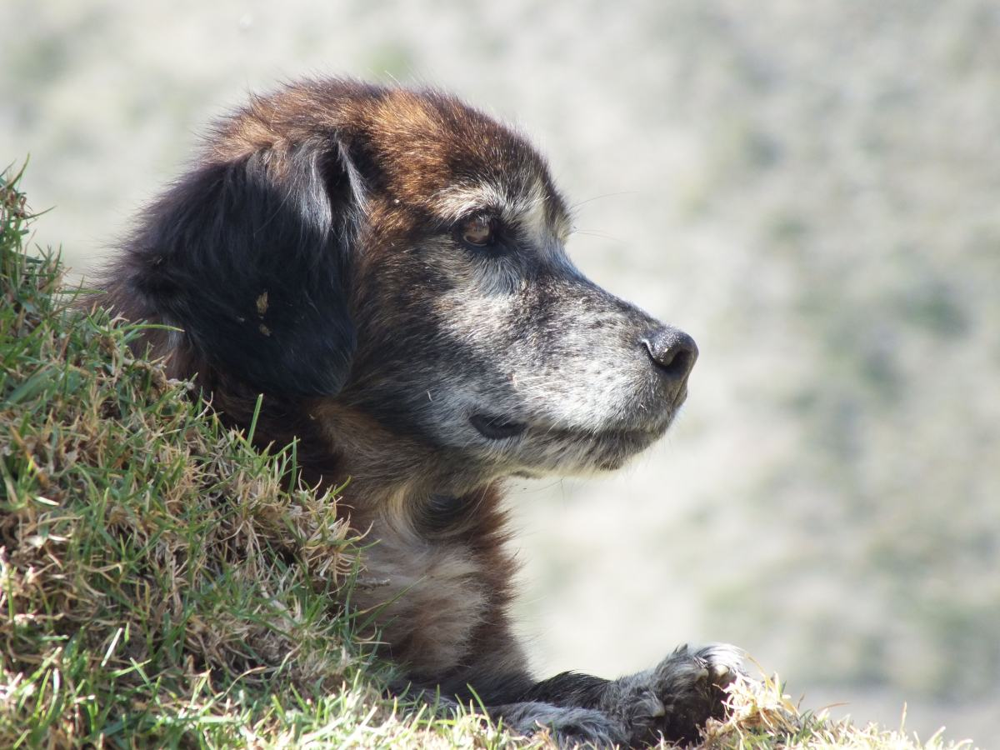
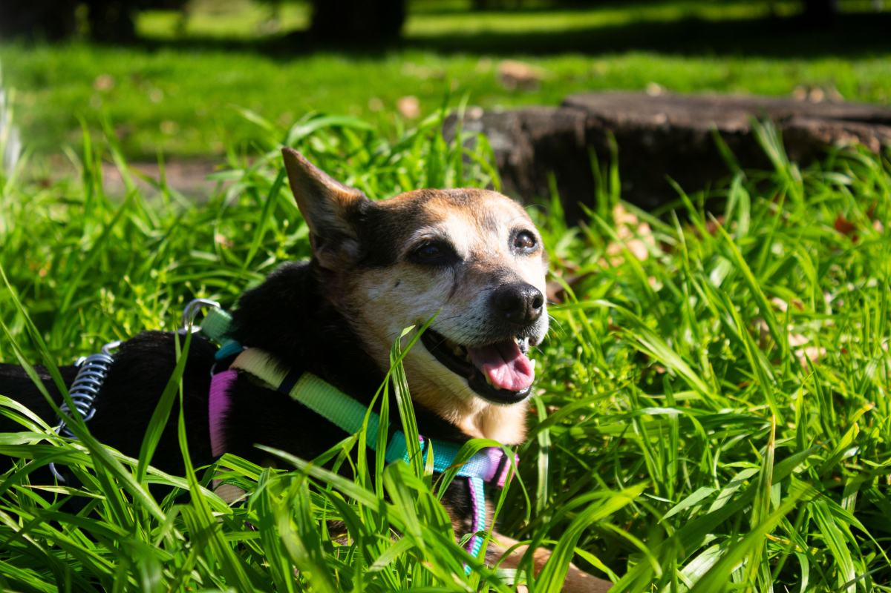
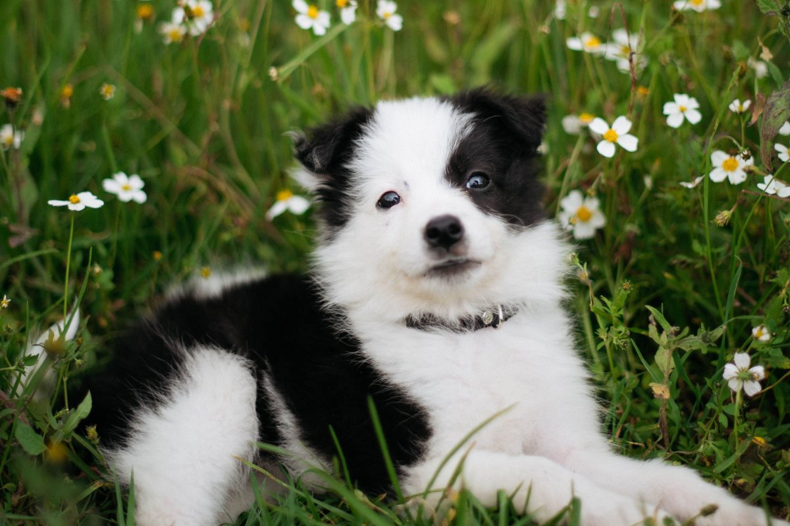

Clínica veterinaria · Temuco
No se enferma de golpe. Cambia de edad.
Cada edad tiene dos o tres cosas que mirar.
- 386reseñas en Google
- 4edades, cada una con lo suyo
- 2teléfonos: consulta y agenda
- 2019el año al pie de su web
Lo único que el dueño sabe con certeza
Las cuatro edades
Un perro grande es mayor mucho antes que uno chico: eso adelanta todo lo de abajo.
-

0 a 1 año
Cachorro
Vacunas, desparasitación y lo que casi nadie hace: enseñarle a que lo revisen.
-
1 a 7 años
Adulto joven
Un control al año y el primer examen de sangre estando sano, para comparar.
-

7 a 10 años
Maduro
Dos controles al año: riñón, hígado y tiroides avisan antes por análisis.
-

10 años o más
Mayor
Que viva bien. Muchos «ya no juega» son dolor, y el dolor se trata.
No es un plan de salud: lo revisa y lo firma la clínica.
Lo que importa a los ocho meses no es lo que importa a los ocho años.
Antes de adoptar
Lo que cuesta un perro al año
- 01
Comida
Varía con el tamaño: es el gasto grande.
- 02
Antiparasitarios
Barato, y lo primero que se deja.
- 03
Control anual
El que más ahorra a la larga.
- 04
El imprevisto
Nadie lo presupuesta y siempre llega.
Los rangos reales, si quiere, los pone la clínica.
Hablarlo antes, con calma, es un regalo que uno se hace.
El perro mayor
En la consulta
Perros y gatos, a cada edad


Fotos de referencia: las de la clínica las pone la clínica.
Dónde estamos
O'Higgins 0297, Temuco
- Dirección
- Bernardo O'Higgins 0297
- Teléfono
- 45 231 5500
- Agenda
- 9 9334 1507
- Horario (AgendaPro)
- Lunes a viernes 10 a 20, sábado 10 a 14
Traiga la libreta de vacunas, el nombre del alimento y desde cuándo pasa.
Bernardo O'Higgins 0297, Temuco Abrir en Google Maps
Para el dueño
Qué es real y qué falta
Lo verificado
El nombre, la dirección, los dos teléfonos, el horario de AgendaPro y las 386 reseñas.
Lo de ejemplo
Los tramos de edad y los gastos del año: orientación general, sin cifras.
Lo que falta
Si atienden urgencias fuera de horario, y las fotos de la clínica.